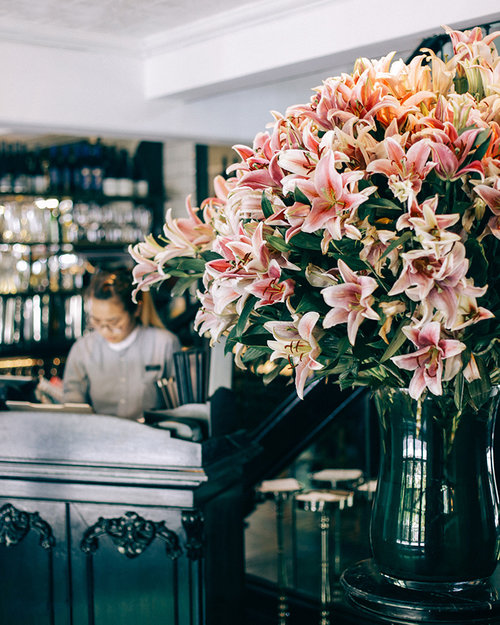
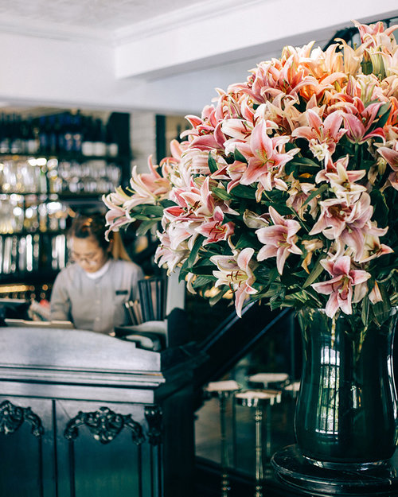

MRS BEAN CAFE: A REFUGE FOR SOCIAL GATHERING
Mr Bean Cafe opened in 1999 as a cozy cafe hidden within Projectshop clothing store. This charming and understated spot quickly gained a following for its hearty takes on savory cafe classics, famous truffle shoestring fries, and indulgent cakes. Thoughtfully detailed interiors, lush surroundings, friendly relaxed service, and generous portions have made this homegrown Singapore brand an internationally recognized local favorite. PS.Cafe is the place for legendary brunches and lazy afternoon teas, romantic dates, and friendly celebrations in beautiful surroundings.